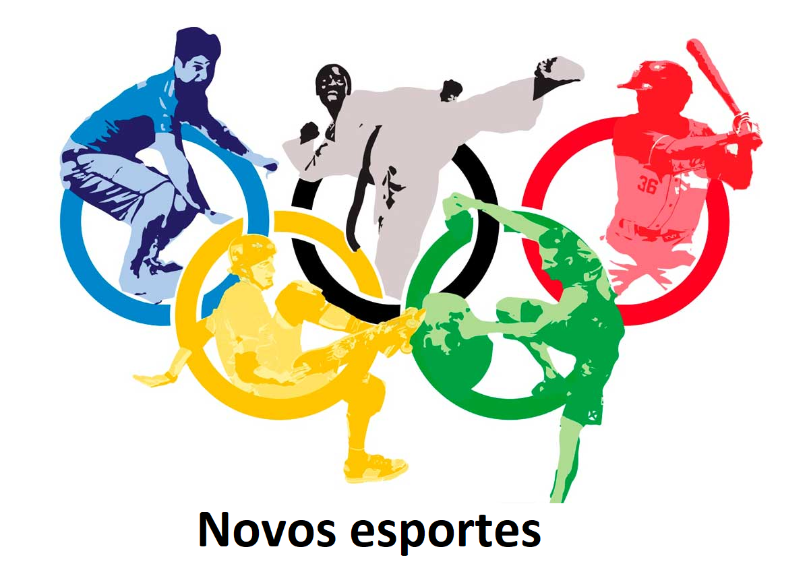
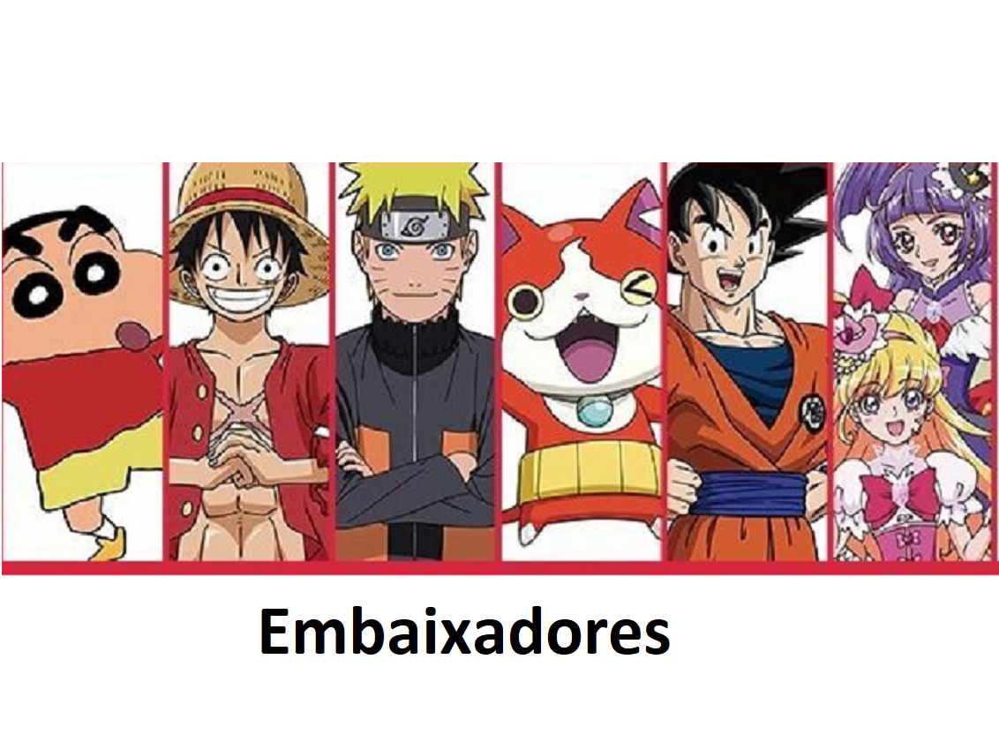
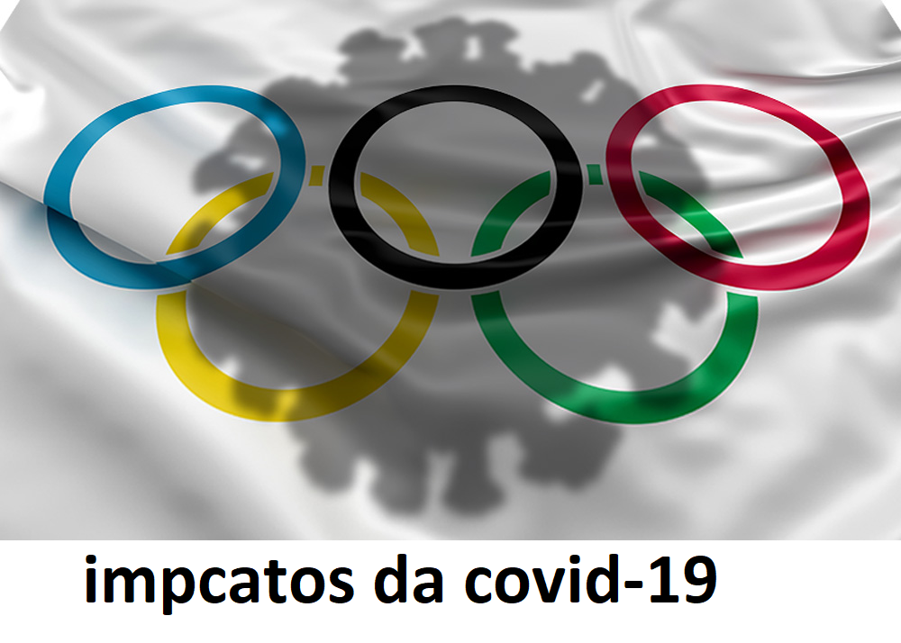

- É um problema que acontece a cada 40 anos. É a maldição das Olimpíadas,
isso é um fato - afirmou Aso, segundo o jornal The Guardian, da Inglaterra.
De fato, a análise de Taro Aso faz sentido. Em 1940, Tóquio receberia as
Olimpíadas pela primeira vez em sua história. Porém, o momento era de tensões políticas. Em 1938, a política expansionista japonesa na China motivou a mudança da sede dos Jogos para Helsinque, na Finlândia. Mesmo assim, a competição acabou não acontecendo, uma vez que havia se iniciado a Segunda Guerra Mundial em 1939.
Quarenta anos depois, as Olimpíadas aconteceram, desta vez em Moscou,
então capital da União Soviética. Porém, aquela edição foi marcada pelo
forte boicote: ao todo, 66 países não enviaram delegações em represália
à invasão soviética no Afeganistão. Entre eles, Japão e Estados Unidos
deixaram de ter atletas nos Jogos de 1980.
A história parece se repetir dessa vez em 2020. Agora, não por tensões
políticas, mas sim pela pandemia de coronavírus. No atual momento global,
diversos países estão em regime de quarentena. Competições esportivas
foram canceladas ao redor do mundo, enquanto mais de 87000 mil pessoas
já perderam suas vidas em decorrência da doença.
|

|

|

|
|